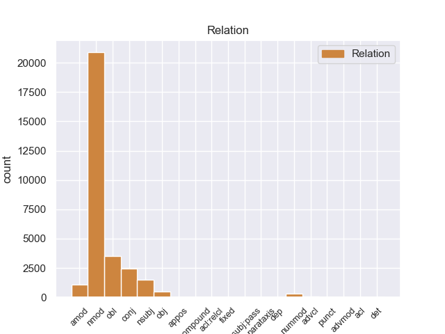
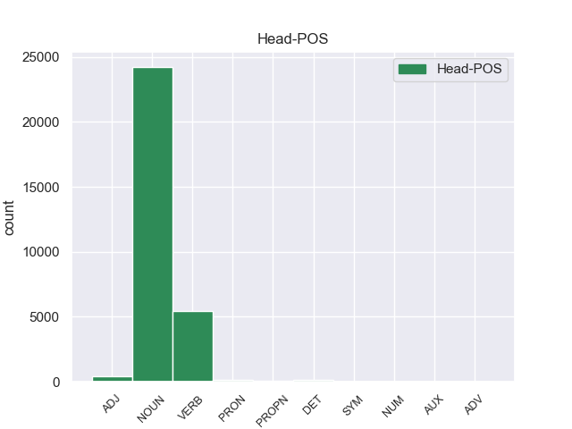
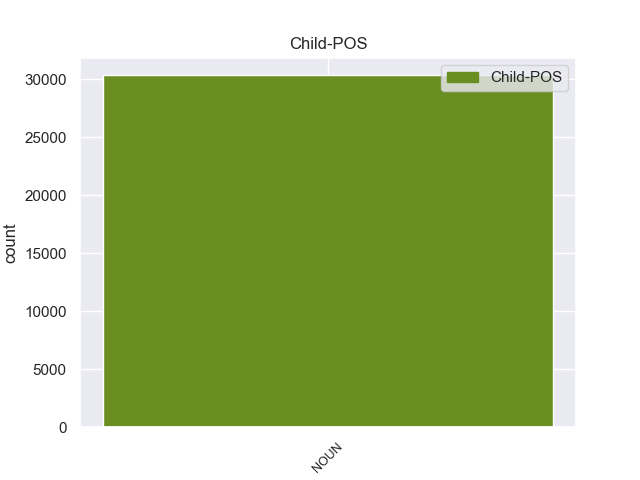

Distribution of features within this leaf



Agreement Rules sorted by frequency.
- When the dependent token is the nominal modifier(nmod) of the head token, and the dependent token is NOUN.
1 Esta _ _ _ _ 0 _ _ _
2 teoría _ _ _ _ 0 _ _ _
3 se _ _ _ _ 0 _ _ _
4 avenía _ _ _ _ 0 _ _ _
5 bien _ _ _ _ 0 _ _ _
6 con _ _ _ _ 0 _ _ _
7 la _ _ _ _ 0 _ _ _
8 creencia _ _ _ _ 0 _ _ _
9 de _ _ _ _ 0 _ _ _
10 el _ _ _ _ 0 _ _ _
11 Romanticismo _ _ _ _ 0 _ _ _
12 en _ _ _ _ 0 _ _ _
13 un _ _ _ _ 0 _ _ _
14 volkgeist _ _ _ _ 0 _ _ _
15 , _ _ _ _ 0 _ _ _
16 " _ _ _ _ 0 _ _ _
17 genio genio NOUN _ Gender=Masc|Number=Sing 0 _ _ _
18 o _ _ _ _ 0 _ _ _
19 espíritu _ _ _ _ 0 _ _ _
20 de _ _ _ _ 0 _ _ _
21 el _ _ _ _ 0 _ _ _
22 pueblo pueblo NOUN _ Gender=Masc|Number=Sing 17 nmod _ _
23 " _ _ _ _ 0 _ _ _
24 , _ _ _ _ 0 _ _ _
25 autor _ _ _ _ 0 _ _ _
26 colectivo _ _ _ _ 0 _ _ _
27 y _ _ _ _ 0 _ _ _
28 anónimo _ _ _ _ 0 _ _ _
29 de _ _ _ _ 0 _ _ _
30 una _ _ _ _ 0 _ _ _
31 poesía _ _ _ _ 0 _ _ _
32 nacional _ _ _ _ 0 _ _ _
33 . _ _ _ _ 0 _ _ _
1 En _ _ _ _ 0 _ _ _
2 1991 _ _ _ _ 0 _ _ _
3 , _ _ _ _ 0 _ _ _
4 como _ _ _ _ 0 _ _ _
5 ya _ _ _ _ 0 _ _ _
6 está _ _ _ _ 0 _ _ _
7 indicado indicado VERB _ Gender=Masc|Number=Sing|VerbForm=Part 0 _ _ _
8 en _ _ _ _ 0 _ _ _
9 el _ _ _ _ 0 _ _ _
10 párrafo párrafo NOUN _ Gender=Masc|Number=Sing 7 obl _ _
11 anterior _ _ _ _ 0 _ _ _
12 , _ _ _ _ 0 _ _ _
13 se _ _ _ _ 0 _ _ _
14 creó _ _ _ _ 0 _ _ _
15 un _ _ _ _ 0 _ _ _
16 equipo _ _ _ _ 0 _ _ _
17 ad _ _ _ _ 0 _ _ _
18 hoc _ _ _ _ 0 _ _ _
19 para _ _ _ _ 0 _ _ _
20 averiguar _ _ _ _ 0 _ _ _
21 como _ _ _ _ 0 _ _ _
22 se _ _ _ _ 0 _ _ _
23 podía _ _ _ _ 0 _ _ _
24 desarrollar _ _ _ _ 0 _ _ _
25 el _ _ _ _ 0 _ _ _
26 Dialogo _ _ _ _ 0 _ _ _
27 Social _ _ _ _ 0 _ _ _
28 , _ _ _ _ 0 _ _ _
29 este _ _ _ _ 0 _ _ _
30 equipo _ _ _ _ 0 _ _ _
31 estaba _ _ _ _ 0 _ _ _
32 formado _ _ _ _ 0 _ _ _
33 por _ _ _ _ 0 _ _ _
34 representantes _ _ _ _ 0 _ _ _
35 de _ _ _ _ 0 _ _ _
36 todas _ _ _ _ 0 _ _ _
37 las _ _ _ _ 0 _ _ _
38 organizaciones _ _ _ _ 0 _ _ _
39 relacionadas _ _ _ _ 0 _ _ _
40 con _ _ _ _ 0 _ _ _
41 CES _ _ _ _ 0 _ _ _
42 , _ _ _ _ 0 _ _ _
43 UNICE _ _ _ _ 0 _ _ _
44 y _ _ _ _ 0 _ _ _
45 CEEP _ _ _ _ 0 _ _ _
46 ; _ _ _ _ 0 _ _ _
1 Esta _ _ _ _ 0 _ _ _
2 teoría _ _ _ _ 0 _ _ _
3 se _ _ _ _ 0 _ _ _
4 avenía _ _ _ _ 0 _ _ _
5 bien _ _ _ _ 0 _ _ _
6 con _ _ _ _ 0 _ _ _
7 la _ _ _ _ 0 _ _ _
8 creencia _ _ _ _ 0 _ _ _
9 de _ _ _ _ 0 _ _ _
10 el _ _ _ _ 0 _ _ _
11 Romanticismo _ _ _ _ 0 _ _ _
12 en _ _ _ _ 0 _ _ _
13 un _ _ _ _ 0 _ _ _
14 volkgeist _ _ _ _ 0 _ _ _
15 , _ _ _ _ 0 _ _ _
16 " _ _ _ _ 0 _ _ _
17 genio _ _ _ _ 0 _ _ _
18 o _ _ _ _ 0 _ _ _
19 espíritu espíritu NOUN _ Gender=Masc|Number=Sing 0 _ _ _
20 de _ _ _ _ 0 _ _ _
21 el _ _ _ _ 0 _ _ _
22 pueblo _ _ _ _ 0 _ _ _
23 " _ _ _ _ 0 _ _ _
24 , _ _ _ _ 0 _ _ _
25 autor autor NOUN _ Gender=Masc|Number=Sing 19 conj _ _
26 colectivo _ _ _ _ 0 _ _ _
27 y _ _ _ _ 0 _ _ _
28 anónimo _ _ _ _ 0 _ _ _
29 de _ _ _ _ 0 _ _ _
30 una _ _ _ _ 0 _ _ _
31 poesía _ _ _ _ 0 _ _ _
32 nacional _ _ _ _ 0 _ _ _
33 . _ _ _ _ 0 _ _ _
1 En _ _ _ _ 0 _ _ _
2 1991 _ _ _ _ 0 _ _ _
3 , _ _ _ _ 0 _ _ _
4 como _ _ _ _ 0 _ _ _
5 ya _ _ _ _ 0 _ _ _
6 está _ _ _ _ 0 _ _ _
7 indicado _ _ _ _ 0 _ _ _
8 en _ _ _ _ 0 _ _ _
9 el _ _ _ _ 0 _ _ _
10 párrafo _ _ _ _ 0 _ _ _
11 anterior _ _ _ _ 0 _ _ _
12 , _ _ _ _ 0 _ _ _
13 se _ _ _ _ 0 _ _ _
14 creó _ _ _ _ 0 _ _ _
15 un _ _ _ _ 0 _ _ _
16 equipo _ _ _ _ 0 _ _ _
17 ad _ _ _ _ 0 _ _ _
18 hoc _ _ _ _ 0 _ _ _
19 para _ _ _ _ 0 _ _ _
20 averiguar _ _ _ _ 0 _ _ _
21 como _ _ _ _ 0 _ _ _
22 se _ _ _ _ 0 _ _ _
23 podía _ _ _ _ 0 _ _ _
24 desarrollar _ _ _ _ 0 _ _ _
25 el _ _ _ _ 0 _ _ _
26 Dialogo _ _ _ _ 0 _ _ _
27 Social _ _ _ _ 0 _ _ _
28 , _ _ _ _ 0 _ _ _
29 este _ _ _ _ 0 _ _ _
30 equipo equipo NOUN _ Gender=Masc|Number=Sing 32 nsubj _ _
31 estaba _ _ _ _ 0 _ _ _
32 formado formado VERB _ Gender=Masc|Number=Sing|VerbForm=Part 0 _ _ _
33 por _ _ _ _ 0 _ _ _
34 representantes _ _ _ _ 0 _ _ _
35 de _ _ _ _ 0 _ _ _
36 todas _ _ _ _ 0 _ _ _
37 las _ _ _ _ 0 _ _ _
38 organizaciones _ _ _ _ 0 _ _ _
39 relacionadas _ _ _ _ 0 _ _ _
40 con _ _ _ _ 0 _ _ _
41 CES _ _ _ _ 0 _ _ _
42 , _ _ _ _ 0 _ _ _
43 UNICE _ _ _ _ 0 _ _ _
44 y _ _ _ _ 0 _ _ _
45 CEEP _ _ _ _ 0 _ _ _
46 ; _ _ _ _ 0 _ _ _
1 Joramun _ _ _ _ 0 _ _ _
2 se _ _ _ _ 0 _ _ _
3 supone _ _ _ _ 0 _ _ _
4 que _ _ _ _ 0 _ _ _
5 era _ _ _ _ 0 _ _ _
6 un _ _ _ _ 0 _ _ _
7 legendario legendario NOUN _ Gender=Masc|Number=Sing 8 amod _ _
8 Rey rey NOUN _ Gender=Masc|Number=Sing 0 _ _ _
9 - _ _ _ _ 0 _ _ _
10 Más _ _ _ _ 0 _ _ _
11 - _ _ _ _ 0 _ _ _
12 Allá _ _ _ _ 0 _ _ _
13 - _ _ _ _ 0 _ _ _
14 de _ _ _ _ 0 _ _ _
15 el _ _ _ _ 0 _ _ _
16 - _ _ _ _ 0 _ _ _
17 Muro _ _ _ _ 0 _ _ _
18 , _ _ _ _ 0 _ _ _
19 a _ _ _ _ 0 _ _ _
20 el _ _ _ _ 0 _ _ _
21 norte _ _ _ _ 0 _ _ _
22 de _ _ _ _ 0 _ _ _
23 los _ _ _ _ 0 _ _ _
24 Siete _ _ _ _ 0 _ _ _
25 Reinos _ _ _ _ 0 _ _ _
26 . _ _ _ _ 0 _ _ _
1 Por _ _ _ _ 0 _ _ _
2 otro _ _ _ _ 0 _ _ _
3 lado _ _ _ _ 0 _ _ _
4 , _ _ _ _ 0 _ _ _
5 se _ _ _ _ 0 _ _ _
6 incorporó _ _ _ _ 0 _ _ _
7 a _ _ _ _ 0 _ _ _
8 el _ _ _ _ 0 _ _ _
9 economista _ _ _ _ 0 _ _ _
10 Domingo _ _ _ _ 0 _ _ _
11 Cavallo _ _ _ _ 0 _ _ _
12 en _ _ _ _ 0 _ _ _
13 el _ _ _ _ 0 _ _ _
14 tercer tercer NOUN _ Gender=Masc|Number=Sing 15 nummod _ _
15 lugar lugar NOUN _ Gender=Masc|Number=Sing 0 _ _ _
16 de _ _ _ _ 0 _ _ _
17 la _ _ _ _ 0 _ _ _
18 nómina _ _ _ _ 0 _ _ _
19 de _ _ _ _ 0 _ _ _
20 candidatos _ _ _ _ 0 _ _ _
21 a _ _ _ _ 0 _ _ _
22 diputados _ _ _ _ 0 _ _ _
23 nacionales _ _ _ _ 0 _ _ _
24 . _ _ _ _ 0 _ _ _
1 La _ _ _ _ 0 _ _ _
2 primera _ _ _ _ 0 _ _ _
3 vez _ _ _ _ 0 _ _ _
4 , _ _ _ _ 0 _ _ _
5 tenía _ _ _ _ 0 _ _ _
6 un _ _ _ _ 0 _ _ _
7 presupuesto _ _ _ _ 0 _ _ _
8 de _ _ _ _ 0 _ _ _
9 700 _ _ _ _ 0 _ _ _
10 € _ _ _ _ 0 _ _ _
11 en _ _ _ _ 0 _ _ _
12 el _ _ _ _ 0 _ _ _
13 servicio _ _ _ _ 0 _ _ _
14 oficial _ _ _ _ 0 _ _ _
15 ( _ _ _ _ 0 _ _ _
16 te _ _ _ _ 0 _ _ _
17 lo _ _ _ _ 0 _ _ _
18 cambio cambio VERB _ Gender=Masc|Number=Sing 0 _ _ _
19 todo _ _ _ _ 0 _ _ _
20 y _ _ _ _ 0 _ _ _
21 soluciono _ _ _ _ 0 _ _ _
22 el _ _ _ _ 0 _ _ _
23 problema problema NOUN _ Gender=Masc|Number=Sing 18 obj _ _
24 ) _ _ _ _ 0 _ _ _
25 , _ _ _ _ 0 _ _ _
26 y _ _ _ _ 0 _ _ _
27 en _ _ _ _ 0 _ _ _
28 Pinauto _ _ _ _ 0 _ _ _
29 me _ _ _ _ 0 _ _ _
30 lo _ _ _ _ 0 _ _ _
31 solucionaron _ _ _ _ 0 _ _ _
32 por _ _ _ _ 0 _ _ _
33 unos _ _ _ _ 0 _ _ _
34 200 _ _ _ _ 0 _ _ _
35 € _ _ _ _ 0 _ _ _
36 , _ _ _ _ 0 _ _ _
37 cambiando _ _ _ _ 0 _ _ _
38 sólo _ _ _ _ 0 _ _ _
39 lo _ _ _ _ 0 _ _ _
40 necesario _ _ _ _ 0 _ _ _
41 . _ _ _ _ 0 _ _ _
1 Don _ _ _ _ 0 _ _ _
2 Diego _ _ _ _ 0 _ _ _
3 de _ _ _ _ 0 _ _ _
4 Montemayor _ _ _ _ 0 _ _ _
5 es _ _ _ _ 0 _ _ _
6 considerado _ _ _ _ 0 _ _ _
7 uno uno NOUN _ Gender=Masc|Number=Sing|VerbForm=Part 0 _ _ _
8 de _ _ _ _ 0 _ _ _
9 los _ _ _ _ 0 _ _ _
10 padres _ _ _ _ 0 _ _ _
11 de _ _ _ _ 0 _ _ _
12 Nuevo _ _ _ _ 0 _ _ _
13 León _ _ _ _ 0 _ _ _
14 , _ _ _ _ 0 _ _ _
15 no _ _ _ _ 0 _ _ _
16 solo _ _ _ _ 0 _ _ _
17 por _ _ _ _ 0 _ _ _
18 haber _ _ _ _ 0 _ _ _
19 sido _ _ _ _ 0 _ _ _
20 uno uno NOUN _ Gender=Masc|Number=Sing|PronType=Ind 7 advcl _ _
21 de _ _ _ _ 0 _ _ _
22 los _ _ _ _ 0 _ _ _
23 primeros _ _ _ _ 0 _ _ _
24 gobernadores _ _ _ _ 0 _ _ _
25 de _ _ _ _ 0 _ _ _
26 el _ _ _ _ 0 _ _ _
27 Nuevo _ _ _ _ 0 _ _ _
28 Reino _ _ _ _ 0 _ _ _
29 de _ _ _ _ 0 _ _ _
30 León _ _ _ _ 0 _ _ _
31 , _ _ _ _ 0 _ _ _
32 sino _ _ _ _ 0 _ _ _
33 que _ _ _ _ 0 _ _ _
34 habiéndo _ _ _ _ 0 _ _ _
35 se _ _ _ _ 0 _ _ _
36 asentado _ _ _ _ 0 _ _ _
37 en _ _ _ _ 0 _ _ _
38 esa _ _ _ _ 0 _ _ _
39 ciudad _ _ _ _ 0 _ _ _
40 , _ _ _ _ 0 _ _ _
41 dejó _ _ _ _ 0 _ _ _
42 su _ _ _ _ 0 _ _ _
43 descendencia _ _ _ _ 0 _ _ _
44 en _ _ _ _ 0 _ _ _
45 esas _ _ _ _ 0 _ _ _
46 tierras _ _ _ _ 0 _ _ _
47 norteñas _ _ _ _ 0 _ _ _
48 . _ _ _ _ 0 _ _ _
1 Varias _ _ _ _ 0 _ _ _
2 personas _ _ _ _ 0 _ _ _
3 de _ _ _ _ 0 _ _ _
4 este _ _ _ _ 0 _ _ _
5 equipo _ _ _ _ 0 _ _ _
6 pasaron _ _ _ _ 0 _ _ _
7 a _ _ _ _ 0 _ _ _
8 jugar _ _ _ _ 0 _ _ _
9 para _ _ _ _ 0 _ _ _
10 " _ _ _ _ 0 _ _ _
11 Crawley _ _ _ _ 0 _ _ _
12 Rugby _ _ _ _ 0 _ _ _
13 Club _ _ _ _ 0 _ _ _
14 " _ _ _ _ 0 _ _ _
15 el _ _ _ _ 0 _ _ _
16 equipo _ _ _ _ 0 _ _ _
17 también _ _ _ _ 0 _ _ _
18 incluyó _ _ _ _ 0 _ _ _
19 a _ _ _ _ 0 _ _ _
20 Richard _ _ _ _ 0 _ _ _
21 Slaney _ _ _ _ 0 _ _ _
22 , _ _ _ _ 0 _ _ _
23 el _ _ _ _ 0 _ _ _
24 que _ _ _ _ 0 _ _ _
25 luego _ _ _ _ 0 _ _ _
26 ganó _ _ _ _ 0 _ _ _
27 el _ _ _ _ 0 _ _ _
28 " _ _ _ _ 0 _ _ _
29 British british PROPN _ Gender=Masc|Number=Sing 0 _ _ _
30 discus discus NOUN _ Gender=Masc|Number=Sing 29 appos _ _
31 " _ _ _ _ 0 _ _ _
32 . _ _ _ _ 0 _ _ _
1 Así _ _ _ _ 0 _ _ _
2 se _ _ _ _ 0 _ _ _
3 sintió _ _ _ _ 0 _ _ _
4 el _ _ _ _ 0 _ _ _
5 gol _ _ _ _ 0 _ _ _
6 de _ _ _ _ 0 _ _ _
7 el _ _ _ _ 0 _ _ _
8 ' ' NOUN _ Gender=Masc|Number=Sing 9 punct _ _
9 uruguayo uruguayo NOUN _ Gender=Masc|Number=Sing 0 _ _ _
10 ' _ _ _ _ 0 _ _ _
11 y _ _ _ _ 0 _ _ _
12 así _ _ _ _ 0 _ _ _
13 lo _ _ _ _ 0 _ _ _
14 celebró _ _ _ _ 0 _ _ _
15 la _ _ _ _ 0 _ _ _
16 afición _ _ _ _ 0 _ _ _
17 colchonera _ _ _ _ 0 _ _ _
18 en _ _ _ _ 0 _ _ _
19 Neptuno _ _ _ _ 0 _ _ _
20 . _ _ _ _ 0 _ _ _
1 Es _ _ _ _ 0 _ _ _
2 por _ _ _ _ 0 _ _ _
3 ello _ _ _ _ 0 _ _ _
4 que _ _ _ _ 0 _ _ _
5 , _ _ _ _ 0 _ _ _
6 antes _ _ _ _ 0 _ _ _
7 que _ _ _ _ 0 _ _ _
8 la _ _ _ _ 0 _ _ _
9 vía _ _ _ _ 0 _ _ _
10 fuera _ _ _ _ 0 _ _ _
11 llamada _ _ _ _ 0 _ _ _
12 jirón _ _ _ _ 0 _ _ _
13 Junín _ _ _ _ 0 _ _ _
14 , _ _ _ _ 0 _ _ _
15 cada _ _ _ _ 0 _ _ _
16 una uno NOUN _ Definite=Ind|Gender=Fem|Number=Sing|PronType=Art 20 det _ _
17 de _ _ _ _ 0 _ _ _
18 sus _ _ _ _ 0 _ _ _
19 13 _ _ _ _ 0 _ _ _
20 cuadras cuadra NOUN _ Gender=Fem|Number=Plur 0 _ _ _
21 tenía _ _ _ _ 0 _ _ _
22 un _ _ _ _ 0 _ _ _
23 nombre _ _ _ _ 0 _ _ _
24 distinto _ _ _ _ 0 _ _ _
25 . _ _ _ _ 0 _ _ _
1 Uno _ _ _ _ 0 _ _ _
2 es _ _ _ _ 0 _ _ _
3 el _ _ _ _ 0 _ _ _
4 año _ _ _ _ 0 _ _ _
5 , _ _ _ _ 0 _ _ _
6 cuya _ _ _ _ 0 _ _ _
7 duración _ _ _ _ 0 _ _ _
8 de _ _ _ _ 0 _ _ _
9 aproximadamente _ _ _ _ 0 _ _ _
10 365 _ _ _ _ 0 _ _ _
11 días _ _ _ _ 0 _ _ _
12 , _ _ _ _ 0 _ _ _
13 viene _ _ _ _ 0 _ _ _
14 dada _ _ _ _ 0 _ _ _
15 por _ _ _ _ 0 _ _ _
16 la _ _ _ _ 0 _ _ _
17 astronomía _ _ _ _ 0 _ _ _
18 y _ _ _ _ 0 _ _ _
19 el _ _ _ _ 0 _ _ _
20 otro _ _ _ _ 0 _ _ _
21 , _ _ _ _ 0 _ _ _
22 más _ _ _ _ 0 _ _ _
23 breve _ _ _ _ 0 _ _ _
24 , _ _ _ _ 0 _ _ _
25 es _ _ _ _ 0 _ _ _
26 el _ _ _ _ 0 _ _ _
27 ciclo _ _ _ _ 0 _ _ _
28 de _ _ _ _ 0 _ _ _
29 siete _ _ _ _ 0 _ _ _
30 días _ _ _ _ 0 _ _ _
31 o _ _ _ _ 0 _ _ _
32 semana _ _ _ _ 0 _ _ _
33 , _ _ _ _ 0 _ _ _
34 en _ _ _ _ 0 _ _ _
35 cuya _ _ _ _ 0 _ _ _
36 duración _ _ _ _ 0 _ _ _
37 , _ _ _ _ 0 _ _ _
38 pese _ _ _ _ 0 _ _ _
39 a _ _ _ _ 0 _ _ _
40 ser _ _ _ _ 0 _ _ _
41 algo algo NOUN _ Gender=Masc|Number=Sing 44 advmod _ _
42 bastante _ _ _ _ 0 _ _ _
43 más _ _ _ _ 0 _ _ _
44 arbitrario arbitrario ADJ _ Gender=Masc|Number=Sing 0 _ _ _
45 están _ _ _ _ 0 _ _ _
46 de _ _ _ _ 0 _ _ _
47 acuerdo _ _ _ _ 0 _ _ _
48 las _ _ _ _ 0 _ _ _
49 culturas _ _ _ _ 0 _ _ _
50 más _ _ _ _ 0 _ _ _
51 relevantes _ _ _ _ 0 _ _ _
52 de _ _ _ _ 0 _ _ _
53 el _ _ _ _ 0 _ _ _
54 mundo _ _ _ _ 0 _ _ _
55 contemporáneo _ _ _ _ 0 _ _ _
56 . _ _ _ _ 0 _ _ _
1 Es _ _ _ _ 0 _ _ _
2 así _ _ _ _ 0 _ _ _
3 como _ _ _ _ 0 _ _ _
4 esta _ _ _ _ 0 _ _ _
5 nueva _ _ _ _ 0 _ _ _
6 figura figura NOUN _ Gender=Fem|Number=Sing 0 _ _ _
7 de _ _ _ _ 0 _ _ _
8 Mega _ _ _ _ 0 _ _ _
9 dejó _ _ _ _ 0 _ _ _
10 su _ _ _ _ 0 _ _ _
11 ciudad _ _ _ _ 0 _ _ _
12 , _ _ _ _ 0 _ _ _
13 Córdoba _ _ _ _ 0 _ _ _
14 , _ _ _ _ 0 _ _ _
15 para _ _ _ _ 0 _ _ _
16 venir _ _ _ _ 0 _ _ _
17 se _ _ _ _ 0 _ _ _
18 a _ _ _ _ 0 _ _ _
19 Chile _ _ _ _ 0 _ _ _
20 a _ _ _ _ 0 _ _ _
21 trabajar _ _ _ _ 0 _ _ _
22 , _ _ _ _ 0 _ _ _
23 país _ _ _ _ 0 _ _ _
24 en _ _ _ _ 0 _ _ _
25 donde _ _ _ _ 0 _ _ _
26 vive _ _ _ _ 0 _ _ _
27 desde _ _ _ _ 0 _ _ _
28 hace _ _ _ _ 0 _ _ _
29 algunos _ _ _ _ 0 _ _ _
30 años _ _ _ _ 0 _ _ _
31 su _ _ _ _ 0 _ _ _
32 hermana _ _ _ _ 0 _ _ _
33 mayor _ _ _ _ 0 _ _ _
34 , _ _ _ _ 0 _ _ _
35 Mara _ _ _ _ 0 _ _ _
36 Coleoni _ _ _ _ 0 _ _ _
37 , _ _ _ _ 0 _ _ _
38 modelo _ _ _ _ 0 _ _ _
39 y _ _ _ _ 0 _ _ _
40 quien _ _ _ _ 0 _ _ _
41 fue _ _ _ _ 0 _ _ _
42 parte parte NOUN _ Gender=Fem|Number=Sing 6 acl:relcl _ _
43 de _ _ _ _ 0 _ _ _
44 el _ _ _ _ 0 _ _ _
45 programa _ _ _ _ 0 _ _ _
46 Yingo _ _ _ _ 0 _ _ _
47 , _ _ _ _ 0 _ _ _
48 de _ _ _ _ 0 _ _ _
49 Chilevisión _ _ _ _ 0 _ _ _
50 , _ _ _ _ 0 _ _ _
51 por _ _ _ _ 0 _ _ _
52 lo _ _ _ _ 0 _ _ _
53 que _ _ _ _ 0 _ _ _
54 para _ _ _ _ 0 _ _ _
55 Cindy _ _ _ _ 0 _ _ _
56 este _ _ _ _ 0 _ _ _
57 territorio _ _ _ _ 0 _ _ _
58 no _ _ _ _ 0 _ _ _
59 era _ _ _ _ 0 _ _ _
60 tan _ _ _ _ 0 _ _ _
61 extraño _ _ _ _ 0 _ _ _
62 y _ _ _ _ 0 _ _ _
63 lejano _ _ _ _ 0 _ _ _
64 . _ _ _ _ 0 _ _ _
1 Josef _ _ _ _ 0 _ _ _
2 Breuer _ _ _ _ 0 _ _ _
3 y _ _ _ _ 0 _ _ _
4 Sigmund _ _ _ _ 0 _ _ _
5 Freud _ _ _ _ 0 _ _ _
6 , _ _ _ _ 0 _ _ _
7 iniciadores iniciadores NOUN _ Gender=Masc|Number=Plur 14 acl _ _
8 de _ _ _ _ 0 _ _ _
9 el _ _ _ _ 0 _ _ _
10 psicoanálisis _ _ _ _ 0 _ _ _
11 , _ _ _ _ 0 _ _ _
12 retomaron _ _ _ _ 0 _ _ _
13 este _ _ _ _ 0 _ _ _
14 concepto concepto NOUN _ Gender=Masc|Number=Sing 0 _ _ _
15 en _ _ _ _ 0 _ _ _
16 sus _ _ _ _ 0 _ _ _
17 primeros _ _ _ _ 0 _ _ _
18 trabajos _ _ _ _ 0 _ _ _
19 , _ _ _ _ 0 _ _ _
20 y _ _ _ _ 0 _ _ _
21 denominaron _ _ _ _ 0 _ _ _
22 método _ _ _ _ 0 _ _ _
23 catártico _ _ _ _ 0 _ _ _
24 a _ _ _ _ 0 _ _ _
25 la _ _ _ _ 0 _ _ _
26 expresión _ _ _ _ 0 _ _ _
27 o _ _ _ _ 0 _ _ _
28 remembranza _ _ _ _ 0 _ _ _
29 de _ _ _ _ 0 _ _ _
30 una _ _ _ _ 0 _ _ _
31 emoción _ _ _ _ 0 _ _ _
32 o _ _ _ _ 0 _ _ _
33 recuerdo _ _ _ _ 0 _ _ _
34 reprimido _ _ _ _ 0 _ _ _
35 durante _ _ _ _ 0 _ _ _
36 el _ _ _ _ 0 _ _ _
37 tratamiento _ _ _ _ 0 _ _ _
38 , _ _ _ _ 0 _ _ _
39 lo _ _ _ _ 0 _ _ _
40 que _ _ _ _ 0 _ _ _
41 generaría _ _ _ _ 0 _ _ _
42 un _ _ _ _ 0 _ _ _
43 " _ _ _ _ 0 _ _ _
44 desbloqueo _ _ _ _ 0 _ _ _
45 " _ _ _ _ 0 _ _ _
46 súbito _ _ _ _ 0 _ _ _
47 de _ _ _ _ 0 _ _ _
48 dicha _ _ _ _ 0 _ _ _
49 emoción _ _ _ _ 0 _ _ _
50 o _ _ _ _ 0 _ _ _
51 recuerdo _ _ _ _ 0 _ _ _
52 , _ _ _ _ 0 _ _ _
53 pero _ _ _ _ 0 _ _ _
54 con _ _ _ _ 0 _ _ _
55 un _ _ _ _ 0 _ _ _
56 impacto _ _ _ _ 0 _ _ _
57 duradero _ _ _ _ 0 _ _ _
58 ( _ _ _ _ 0 _ _ _
59 y _ _ _ _ 0 _ _ _
60 le _ _ _ _ 0 _ _ _
61 permitiría _ _ _ _ 0 _ _ _
62 luego _ _ _ _ 0 _ _ _
63 a _ _ _ _ 0 _ _ _
64 el _ _ _ _ 0 _ _ _
65 paciente _ _ _ _ 0 _ _ _
66 , _ _ _ _ 0 _ _ _
67 por _ _ _ _ 0 _ _ _
68 ejemplo _ _ _ _ 0 _ _ _
69 , _ _ _ _ 0 _ _ _
70 entender _ _ _ _ 0 _ _ _
71 mejor _ _ _ _ 0 _ _ _
72 dicha _ _ _ _ 0 _ _ _
73 emoción _ _ _ _ 0 _ _ _
74 o _ _ _ _ 0 _ _ _
75 evento _ _ _ _ 0 _ _ _
76 o _ _ _ _ 0 _ _ _
77 incluso _ _ _ _ 0 _ _ _
78 hablar _ _ _ _ 0 _ _ _
79 ampliamente _ _ _ _ 0 _ _ _
80 sobre _ _ _ _ 0 _ _ _
81 ello _ _ _ _ 0 _ _ _
82 ) _ _ _ _ 0 _ _ _
83 . _ _ _ _ 0 _ _ _
1 - _ _ _ _ 0 _ _ _
2 « _ _ _ _ 0 _ _ _
3 La _ _ _ _ 0 _ _ _
4 superficie _ _ _ _ 0 _ _ _
5 total _ _ _ _ 0 _ _ _
6 de _ _ _ _ 0 _ _ _
7 glaciares _ _ _ _ 0 _ _ _
8 se _ _ _ _ 0 _ _ _
9 reducirá _ _ _ _ 0 _ _ _
10 de _ _ _ _ 0 _ _ _
11 los _ _ _ _ 0 _ _ _
12 actuales _ _ _ _ 0 _ _ _
13 500.000 _ _ _ _ 0 _ _ _
14 kilómetros _ _ _ _ 0 _ _ _
15 cuadrados _ _ _ _ 0 _ _ _
16 a _ _ _ _ 0 _ _ _
17 sólo _ _ _ _ 0 _ _ _
18 100.000 _ _ _ _ 0 _ _ _
19 en _ _ _ _ 0 _ _ _
20 el _ _ _ _ 0 _ _ _
21 año _ _ _ _ 0 _ _ _
22 2035 _ _ _ _ 0 _ _ _
23 » _ _ _ _ 0 _ _ _
24 : _ _ _ _ 0 _ _ _
25 En _ _ _ _ 0 _ _ _
26 la _ _ _ _ 0 _ _ _
27 actualidad _ _ _ _ 0 _ _ _
28 sólo _ _ _ _ 0 _ _ _
29 hay _ _ _ _ 0 _ _ _
30 33.000 _ _ _ _ 0 _ _ _
31 kilómetros kilómetro NOUN _ Gender=Masc|Number=Plur 0 _ _ _
32 cuadrados cuadrado NOUN _ Gender=Masc|Number=Plur 31 dep _ _
33 . _ _ _ _ 0 _ _ _
1 Planet _ _ _ _ 0 _ _ _
2 of _ _ _ _ 0 _ _ _
3 Dinosaurs _ _ _ _ 0 _ _ _
4 , _ _ _ _ 0 _ _ _
5 es _ _ _ _ 0 _ _ _
6 una _ _ _ _ 0 _ _ _
7 es _ _ _ _ 0 _ _ _
8 una _ _ _ _ 0 _ _ _
9 película _ _ _ _ 0 _ _ _
10 de _ _ _ _ 0 _ _ _
11 ciencia ciencia NOUN _ Gender=Fem|Number=Sing 12 compound _ _
12 ficción ficción NOUN _ Gender=Fem|Number=Sing 0 _ _ _
13 estadounidense _ _ _ _ 0 _ _ _
14 de _ _ _ _ 0 _ _ _
15 1978 _ _ _ _ 0 _ _ _
16 , _ _ _ _ 0 _ _ _
17 dirigida _ _ _ _ 0 _ _ _
18 por _ _ _ _ 0 _ _ _
19 James _ _ _ _ 0 _ _ _
20 K. _ _ _ _ 0 _ _ _
21 Shmea _ _ _ _ 0 _ _ _
22 . _ _ _ _ 0 _ _ _
1 Sin _ _ _ _ 0 _ _ _
2 embargo _ _ _ _ 0 _ _ _
3 , _ _ _ _ 0 _ _ _
4 emitieron _ _ _ _ 0 _ _ _
5 una _ _ _ _ 0 _ _ _
6 declaración _ _ _ _ 0 _ _ _
7 el _ _ _ _ 0 _ _ _
8 6 _ _ _ _ 0 _ _ _
9 de _ _ _ _ 0 _ _ _
10 noviembre _ _ _ _ 0 _ _ _
11 , _ _ _ _ 0 _ _ _
12 una uno DET _ Definite=Ind|Gender=Fem|Number=Sing|PronType=Art 0 _ _ _
13 vez vez NOUN _ Gender=Fem|Number=Sing 12 fixed _ _
14 que _ _ _ _ 0 _ _ _
15 el _ _ _ _ 0 _ _ _
16 embargo _ _ _ _ 0 _ _ _
17 y _ _ _ _ 0 _ _ _
18 el _ _ _ _ 0 _ _ _
19 aumento _ _ _ _ 0 _ _ _
20 de _ _ _ _ 0 _ _ _
21 el _ _ _ _ 0 _ _ _
22 precio _ _ _ _ 0 _ _ _
23 ya _ _ _ _ 0 _ _ _
24 habían _ _ _ _ 0 _ _ _
25 comenzado _ _ _ _ 0 _ _ _
26 ; _ _ _ _ 0 _ _ _
1 Una _ _ _ _ 0 _ _ _
2 demanda demanda NOUN _ Gender=Fem|Number=Sing 5 nsubj:pass _ _
3 parecida _ _ _ _ 0 _ _ _
4 fue _ _ _ _ 0 _ _ _
5 presentada presentar VERB _ Gender=Fem|Number=Sing|Tense=Past|VerbForm=Part 0 _ _ _
6 hace _ _ _ _ 0 _ _ _
7 un _ _ _ _ 0 _ _ _
8 mes _ _ _ _ 0 _ _ _
9 contra _ _ _ _ 0 _ _ _
10 una _ _ _ _ 0 _ _ _
11 compañía _ _ _ _ 0 _ _ _
12 rival _ _ _ _ 0 _ _ _
13 de _ _ _ _ 0 _ _ _
14 Clearspring _ _ _ _ 0 _ _ _
15 , _ _ _ _ 0 _ _ _
16 Quantcast _ _ _ _ 0 _ _ _
17 , _ _ _ _ 0 _ _ _
18 por _ _ _ _ 0 _ _ _
19 razones _ _ _ _ 0 _ _ _
20 similares _ _ _ _ 0 _ _ _
21 . _ _ _ _ 0 _ _ _
1 Conocido _ _ _ _ 0 _ _ _
2 con _ _ _ _ 0 _ _ _
3 el _ _ _ _ 0 _ _ _
4 pseudónimo _ _ _ _ 0 _ _ _
5 de _ _ _ _ 0 _ _ _
6 " _ _ _ _ 0 _ _ _
7 Ruben _ _ _ _ 0 _ _ _
8 Rojas _ _ _ _ 0 _ _ _
9 " _ _ _ _ 0 _ _ _
10 , _ _ _ _ 0 _ _ _
11 Cañas _ _ _ _ 0 _ _ _
12 fue _ _ _ _ 0 _ _ _
13 uno uno PRON _ Gender=Masc|Number=Sing|PronType=Ind 0 _ _ _
14 de _ _ _ _ 0 _ _ _
15 los _ _ _ _ 0 _ _ _
16 miembros _ _ _ _ 0 _ _ _
17 de _ _ _ _ 0 _ _ _
18 la _ _ _ _ 0 _ _ _
19 Comisión _ _ _ _ 0 _ _ _
20 de _ _ _ _ 0 _ _ _
21 Negociación _ _ _ _ 0 _ _ _
22 que _ _ _ _ 0 _ _ _
23 firmó _ _ _ _ 0 _ _ _
24 los _ _ _ _ 0 _ _ _
25 Acuerdos _ _ _ _ 0 _ _ _
26 de _ _ _ _ 0 _ _ _
27 Paz _ _ _ _ 0 _ _ _
28 en _ _ _ _ 0 _ _ _
29 1992 _ _ _ _ 0 _ _ _
30 también _ _ _ _ 0 _ _ _
31 fue _ _ _ _ 0 _ _ _
32 miembro miembro NOUN _ Gender=Masc|Number=Sing 13 parataxis _ _
33 de _ _ _ _ 0 _ _ _
34 la _ _ _ _ 0 _ _ _
35 Comisión _ _ _ _ 0 _ _ _
36 Política _ _ _ _ 0 _ _ _
37 y _ _ _ _ 0 _ _ _
38 de _ _ _ _ 0 _ _ _
39 el _ _ _ _ 0 _ _ _
40 Consejo _ _ _ _ 0 _ _ _
41 Nacional _ _ _ _ 0 _ _ _
42 de _ _ _ _ 0 _ _ _
43 el _ _ _ _ 0 _ _ _
44 Frente _ _ _ _ 0 _ _ _
45 Farabundo _ _ _ _ 0 _ _ _
46 Martí _ _ _ _ 0 _ _ _
47 para _ _ _ _ 0 _ _ _
48 la _ _ _ _ 0 _ _ _
49 Liberación _ _ _ _ 0 _ _ _
50 Nacional _ _ _ _ 0 _ _ _
51 ( _ _ _ _ 0 _ _ _
52 FMLN _ _ _ _ 0 _ _ _
53 ) _ _ _ _ 0 _ _ _
54 , _ _ _ _ 0 _ _ _
55 el _ _ _ _ 0 _ _ _
56 partido _ _ _ _ 0 _ _ _
57 de _ _ _ _ 0 _ _ _
58 izquierda _ _ _ _ 0 _ _ _
59 que _ _ _ _ 0 _ _ _
60 a _ _ _ _ 0 _ _ _
61 la _ _ _ _ 0 _ _ _
62 postre _ _ _ _ 0 _ _ _
63 se _ _ _ _ 0 _ _ _
64 convertiría _ _ _ _ 0 _ _ _
65 en _ _ _ _ 0 _ _ _
66 el _ _ _ _ 0 _ _ _
67 principal _ _ _ _ 0 _ _ _
68 de _ _ _ _ 0 _ _ _
69 esta _ _ _ _ 0 _ _ _
70 tendencia _ _ _ _ 0 _ _ _
71 en _ _ _ _ 0 _ _ _
72 El _ _ _ _ 0 _ _ _
73 Salvador _ _ _ _ 0 _ _ _
74 . _ _ _ _ 0 _ _ _
Disagree Examples:
1 Otra _ _ _ _ 0 _ _ _
2 alternativa _ _ _ _ 0 _ _ _
3 para _ _ _ _ 0 _ _ _
4 los _ _ _ _ 0 _ _ _
5 techos techo ADJ _ Gender=Masc|Number=Plur 0 _ _ _
6 planos _ _ _ _ 0 _ _ _
7 de _ _ _ _ 0 _ _ _
8 la _ _ _ _ 0 _ _ _
9 modernidad modernidad NOUN _ Gender=Fem|Number=Sing 5 nmod _ _
10 sería _ _ _ _ 0 _ _ _
11 exagerar _ _ _ _ 0 _ _ _
12 un _ _ _ _ 0 _ _ _
13 techo _ _ _ _ 0 _ _ _
14 tradicional _ _ _ _ 0 _ _ _
15 para _ _ _ _ 0 _ _ _
16 llamar _ _ _ _ 0 _ _ _
17 la _ _ _ _ 0 _ _ _
18 atención _ _ _ _ 0 _ _ _
19 incluso _ _ _ _ 0 _ _ _
20 más _ _ _ _ 0 _ _ _
21 a _ _ _ _ 0 _ _ _
22 esta _ _ _ _ 0 _ _ _
23 , _ _ _ _ 0 _ _ _
24 como _ _ _ _ 0 _ _ _
25 la _ _ _ _ 0 _ _ _
26 Academia _ _ _ _ 0 _ _ _
27 Estadounidense _ _ _ _ 0 _ _ _
28 de _ _ _ _ 0 _ _ _
29 las _ _ _ _ 0 _ _ _
30 Artes _ _ _ _ 0 _ _ _
31 y _ _ _ _ 0 _ _ _
32 las _ _ _ _ 0 _ _ _
33 Ciencias _ _ _ _ 0 _ _ _
34 de _ _ _ _ 0 _ _ _
35 Kallmann _ _ _ _ 0 _ _ _
36 McKinnell _ _ _ _ 0 _ _ _
37 & _ _ _ _ 0 _ _ _
38 Wood _ _ _ _ 0 _ _ _
39 en _ _ _ _ 0 _ _ _
40 Cambridge _ _ _ _ 0 _ _ _
41 , _ _ _ _ 0 _ _ _
42 Massachusetts _ _ _ _ 0 _ _ _
43 , _ _ _ _ 0 _ _ _
44 teniendo _ _ _ _ 0 _ _ _
45 tres _ _ _ _ 0 _ _ _
46 niveles _ _ _ _ 0 _ _ _
47 de _ _ _ _ 0 _ _ _
48 techo _ _ _ _ 0 _ _ _
49 bajo _ _ _ _ 0 _ _ _
50 a _ _ _ _ 0 _ _ _
51 cuatro _ _ _ _ 0 _ _ _
52 aguas _ _ _ _ 0 _ _ _
53 constituyendo _ _ _ _ 0 _ _ _
54 se _ _ _ _ 0 _ _ _
55 uno _ _ _ _ 0 _ _ _
56 encima _ _ _ _ 0 _ _ _
57 de _ _ _ _ 0 _ _ _
58 otro _ _ _ _ 0 _ _ _
59 para _ _ _ _ 0 _ _ _
60 una _ _ _ _ 0 _ _ _
61 declaración _ _ _ _ 0 _ _ _
62 enfática _ _ _ _ 0 _ _ _
63 de _ _ _ _ 0 _ _ _
64 refugio _ _ _ _ 0 _ _ _
65 . _ _ _ _ 0 _ _ _
1 Otra _ _ _ _ 0 _ _ _
2 alternativa _ _ _ _ 0 _ _ _
3 para _ _ _ _ 0 _ _ _
4 los _ _ _ _ 0 _ _ _
5 techos _ _ _ _ 0 _ _ _
6 planos _ _ _ _ 0 _ _ _
7 de _ _ _ _ 0 _ _ _
8 la _ _ _ _ 0 _ _ _
9 modernidad _ _ _ _ 0 _ _ _
10 sería _ _ _ _ 0 _ _ _
11 exagerar _ _ _ _ 0 _ _ _
12 un _ _ _ _ 0 _ _ _
13 techo _ _ _ _ 0 _ _ _
14 tradicional _ _ _ _ 0 _ _ _
15 para _ _ _ _ 0 _ _ _
16 llamar _ _ _ _ 0 _ _ _
17 la _ _ _ _ 0 _ _ _
18 atención _ _ _ _ 0 _ _ _
19 incluso _ _ _ _ 0 _ _ _
20 más _ _ _ _ 0 _ _ _
21 a _ _ _ _ 0 _ _ _
22 esta _ _ _ _ 0 _ _ _
23 , _ _ _ _ 0 _ _ _
24 como _ _ _ _ 0 _ _ _
25 la _ _ _ _ 0 _ _ _
26 Academia _ _ _ _ 0 _ _ _
27 Estadounidense _ _ _ _ 0 _ _ _
28 de _ _ _ _ 0 _ _ _
29 las _ _ _ _ 0 _ _ _
30 Artes _ _ _ _ 0 _ _ _
31 y _ _ _ _ 0 _ _ _
32 las _ _ _ _ 0 _ _ _
33 Ciencias _ _ _ _ 0 _ _ _
34 de _ _ _ _ 0 _ _ _
35 Kallmann _ _ _ _ 0 _ _ _
36 McKinnell _ _ _ _ 0 _ _ _
37 & _ _ _ _ 0 _ _ _
38 Wood _ _ _ _ 0 _ _ _
39 en _ _ _ _ 0 _ _ _
40 Cambridge _ _ _ _ 0 _ _ _
41 , _ _ _ _ 0 _ _ _
42 Massachusetts _ _ _ _ 0 _ _ _
43 , _ _ _ _ 0 _ _ _
44 teniendo _ _ _ _ 0 _ _ _
45 tres _ _ _ _ 0 _ _ _
46 niveles _ _ _ _ 0 _ _ _
47 de _ _ _ _ 0 _ _ _
48 techo _ _ _ _ 0 _ _ _
49 bajo _ _ _ _ 0 _ _ _
50 a _ _ _ _ 0 _ _ _
51 cuatro _ _ _ _ 0 _ _ _
52 aguas _ _ _ _ 0 _ _ _
53 constituyendo _ _ _ _ 0 _ _ _
54 se _ _ _ _ 0 _ _ _
55 uno _ _ _ _ 0 _ _ _
56 encima _ _ _ _ 0 _ _ _
57 de _ _ _ _ 0 _ _ _
58 otro _ _ _ _ 0 _ _ _
59 para _ _ _ _ 0 _ _ _
60 una _ _ _ _ 0 _ _ _
61 declaración declaración NOUN _ Gender=Fem|Number=Sing 0 _ _ _
62 enfática _ _ _ _ 0 _ _ _
63 de _ _ _ _ 0 _ _ _
64 refugio refugio NOUN _ Gender=Masc|Number=Sing 61 nmod _ SpaceAfter=No
65 . _ _ _ _ 0 _ _ _
1 Tellius _ _ _ _ 0 _ _ _
2 se _ _ _ _ 0 _ _ _
3 encuentra _ _ _ _ 0 _ _ _
4 dividida _ _ _ _ 0 _ _ _
5 en _ _ _ _ 0 _ _ _
6 varias _ _ _ _ 0 _ _ _
7 naciones _ _ _ _ 0 _ _ _
8 que _ _ _ _ 0 _ _ _
9 son _ _ _ _ 0 _ _ _
10 gobernadas gobernado VERB _ Gender=Fem|Number=Plur|Tense=Past|VerbForm=Part 0 _ _ _
11 por _ _ _ _ 0 _ _ _
12 beorcs beorcs NOUN _ Gender=Masc|Number=Sing 10 obl _ _
13 o _ _ _ _ 0 _ _ _
14 laguz _ _ _ _ 0 _ _ _
15 . _ _ _ _ 0 _ _ _
1 De _ _ _ _ 0 _ _ _
2 acuerdo _ _ _ _ 0 _ _ _
3 a _ _ _ _ 0 _ _ _
4 Billboard _ _ _ _ 0 _ _ _
5 , _ _ _ _ 0 _ _ _
6 « _ _ _ _ 0 _ _ _
7 I _ _ _ _ 0 _ _ _
8 Think _ _ _ _ 0 _ _ _
9 I _ _ _ _ 0 _ _ _
10 'm _ _ _ _ 0 _ _ _
11 In _ _ _ _ 0 _ _ _
12 Love _ _ _ _ 0 _ _ _
13 With _ _ _ _ 0 _ _ _
14 You _ _ _ _ 0 _ _ _
15 » _ _ _ _ 0 _ _ _
16 es _ _ _ _ 0 _ _ _
17 el _ _ _ _ 0 _ _ _
18 sexto _ _ _ _ 0 _ _ _
19 sencillo _ _ _ _ 0 _ _ _
20 más _ _ _ _ 0 _ _ _
21 exitoso exitoso ADJ _ Gender=Masc|Number=Sing 0 _ _ _
22 de _ _ _ _ 0 _ _ _
23 toda _ _ _ _ 0 _ _ _
24 la _ _ _ _ 0 _ _ _
25 carrera carrera NOUN _ Gender=Fem|Number=Sing 21 nmod _ _
26 de _ _ _ _ 0 _ _ _
27 Jessica _ _ _ _ 0 _ _ _
28 Simpson _ _ _ _ 0 _ _ _
29 en _ _ _ _ 0 _ _ _
30 la _ _ _ _ 0 _ _ _
31 principal _ _ _ _ 0 _ _ _
32 lista _ _ _ _ 0 _ _ _
33 de _ _ _ _ 0 _ _ _
34 Estados _ _ _ _ 0 _ _ _
35 Unidos _ _ _ _ 0 _ _ _
36 : _ _ _ _ 0 _ _ _
37 la _ _ _ _ 0 _ _ _
38 Billboard _ _ _ _ 0 _ _ _
39 Hot _ _ _ _ 0 _ _ _
40 100 _ _ _ _ 0 _ _ _
41 . _ _ _ _ 0 _ _ _
1 De _ _ _ _ 0 _ _ _
2 acuerdo _ _ _ _ 0 _ _ _
3 a _ _ _ _ 0 _ _ _
4 Billboard _ _ _ _ 0 _ _ _
5 , _ _ _ _ 0 _ _ _
6 « _ _ _ _ 0 _ _ _
7 I _ _ _ _ 0 _ _ _
8 Think _ _ _ _ 0 _ _ _
9 I _ _ _ _ 0 _ _ _
10 'm _ _ _ _ 0 _ _ _
11 In _ _ _ _ 0 _ _ _
12 Love _ _ _ _ 0 _ _ _
13 With _ _ _ _ 0 _ _ _
14 You _ _ _ _ 0 _ _ _
15 » _ _ _ _ 0 _ _ _
16 es _ _ _ _ 0 _ _ _
17 el _ _ _ _ 0 _ _ _
18 sexto _ _ _ _ 0 _ _ _
19 sencillo _ _ _ _ 0 _ _ _
20 más _ _ _ _ 0 _ _ _
21 exitoso exitoso ADJ _ Gender=Masc|Number=Sing 0 _ _ _
22 de _ _ _ _ 0 _ _ _
23 toda _ _ _ _ 0 _ _ _
24 la _ _ _ _ 0 _ _ _
25 carrera _ _ _ _ 0 _ _ _
26 de _ _ _ _ 0 _ _ _
27 Jessica _ _ _ _ 0 _ _ _
28 Simpson _ _ _ _ 0 _ _ _
29 en _ _ _ _ 0 _ _ _
30 la _ _ _ _ 0 _ _ _
31 principal _ _ _ _ 0 _ _ _
32 lista lista NOUN _ Gender=Fem|Number=Sing 21 nmod _ _
33 de _ _ _ _ 0 _ _ _
34 Estados _ _ _ _ 0 _ _ _
35 Unidos _ _ _ _ 0 _ _ _
36 : _ _ _ _ 0 _ _ _
37 la _ _ _ _ 0 _ _ _
38 Billboard _ _ _ _ 0 _ _ _
39 Hot _ _ _ _ 0 _ _ _
40 100 _ _ _ _ 0 _ _ _
41 . _ _ _ _ 0 _ _ _